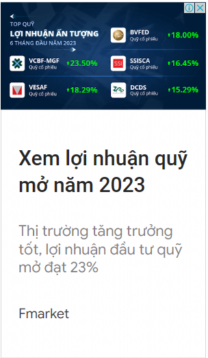
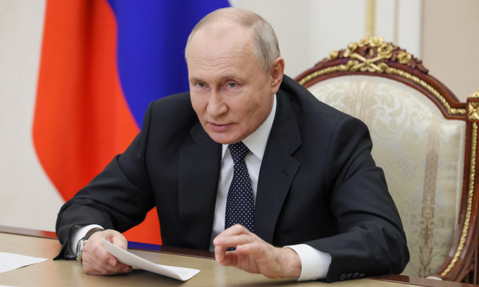

| Ông Putin: Nền kinh tế Nga đã hồi phục hoàn toàn
Ông Putin tuyên bố nền kinh tế Nga đã phục hồi sau thời gian chống chịu áp lực chưa từng thấy từ phương Tây. "Nhìn chung, có thể nói rằng giai đoạn phục hồi nền kinh tế Nga đã hoàn thành. Chúng ta đã trụ vững trước áp lực bên ngoài ở mức độ chưa từng thấy, với những lệnh cấm vận không ngừng nghỉ từ giới lãnh đạo phương Tây và một số quốc gia không thân thiện", Tổng thống Nga Vladimir Putin nói hôm nay khi dự cuộc họp về dự thảo ngân sách liên bang giai đoạn 2024-2025. |
 |
|---|---|
|
Ngoại trưởng Nga, Trung Quốc gặp nhau
Ngoại trưởng Nga và Trung Quốc gặp nhau tại Moskva để thảo luận về nhiều vấn đề, trong đó có Mỹ và Ukraine. |
Ukraine tuyên bố chọc thủng phòng tuyến Nga gần Bakhmut
Tư lệnh lục quân Ukraine tuyên bố lực lượng nước này chọc thủng phòng tuyến Nga |

|
Những VĐV được chờ đợi toả sáng tại Asiad 2023
Siêu sao nhảy cao Mutaz Barshim, tay vợt bóng bàn Sun Yingsha, kình ngư Ikee Rikako |
|---|---|
|
Kinh tế
Gía vàng 2023 |
Giải trí
Chương trình live show trở nên hot trên mạng xã hội |